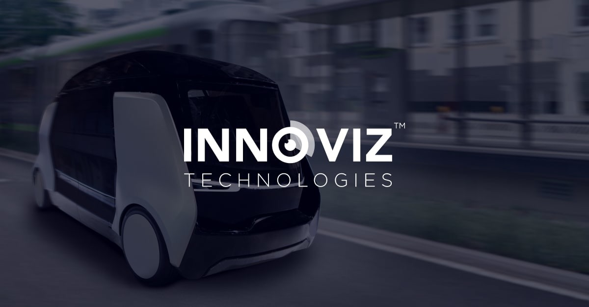

Innoviz Technologiesは、フォルクスワーゲン（VW）の自動運転車両向けに新設計されたLiDARプラットフォームの出荷を加速していることを発表した。本発表は、フォルクスワーゲンの自動運転電気バン「ID. Buzz AD」向けにInnovizTwoセンサーを量産供給するプログラムの進捗を示している。
InnovizとVWのパートナーシップは、自動運転ロボタクシーサービスを目的として設計されたID. Buzz ADへの搭載を中心としている。このプログラムでは、各車両に計9台のInnovizTwo LiDARを搭載し、360度の完全なカバレッジを実現する。これにより、複雑な都市環境での安全かつ信頼性の高い自律走行ナビゲーションが可能となる。
InnovizTwoは、Innovizの第2世代車載グレードLiDARプラットフォームであり、量産化、高性能、堅牢性を重視して設計されている。InnovizOneを前身に持つこのプラットフォームは、自動車OEMの厳格な要件に応えるため、機能安全規格（ISO 26262 ASIL-B）に対応している。また、コスト削減と信頼性向上のためにシリコンフォトニクスを採用した固有の設計を特徴とする。
主な技術仕様として、長距離検出能力（100メートルで10%の反射率のターゲットを検出）、高い角度分解能、過酷な温度条件下での動作保証、そして自動車グレードの信頼性認証が挙げられる。
Innovizは、VWグループのロボタクシー事業を担うMOIA（モビリティサービス会社）との協力のもと、欧州での商業運用開始に向けてプログラムを加速させている。新たに設計されたLiDARプラットフォームは、初期設計から大幅な改良が加えられており、車両統合の効率化と量産工程の最適化を実現している。
Innovizの経営陣は、このプログラムが同社の技術力の証明であるとともに、欧州市場における自動運転プログラムのリファレンスとなると述べている。VWとのパートナーシップは、Innovizが自動車OEMとの長期的な量産プログラムを実現できる能力を持つことを示す重要な実績となっている。
Innovizはこのプログラムを通じ、大手自動車メーカーと直接量産プログラムを進める数少ないLiDARメーカーの一社として、欧州・北米市場でのポジションを確立しようとしている。InnovizTwoは、フォルクスワーゲン以外にも複数の自動車OEMに採用が検討されており、自動車向けLiDARの主流プラットフォームとしての地位確立を目指している。
同社はハンズオフ走行やL3以上の自動運転機能を実現するために必要な高精度の3D点群を提供することで、自動車メーカーが次世代の自動運転システムを開発するための基盤を提供している。
Innovizは、VWのID. Buzz ADを皮切りに、欧州や北米の主要自動車プログラムへの展開を拡大する計画を持っている。同社はLiDAR技術の継続的な改良に投資しており、次世代InnovizThreeは超長距離検出と高解像度のさらなる向上を目指している。このプラットフォームは、将来の自律型モビリティサービスや高度な運転支援システムにおけるLiDARの役割をさらに拡大するものと期待されている。